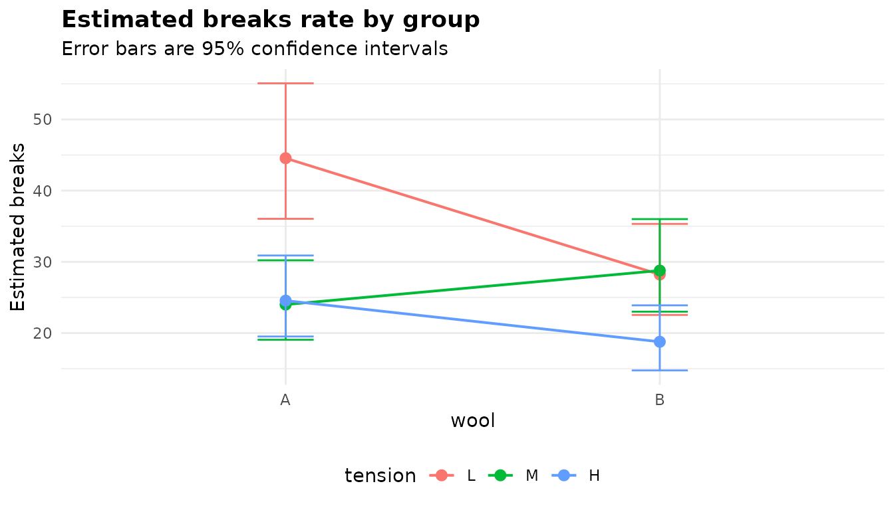
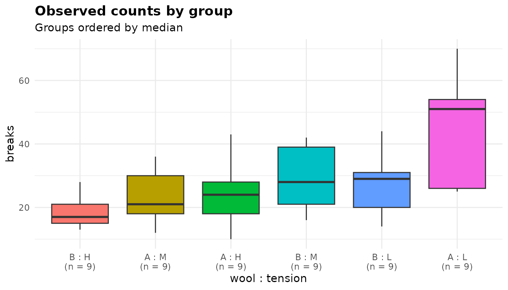
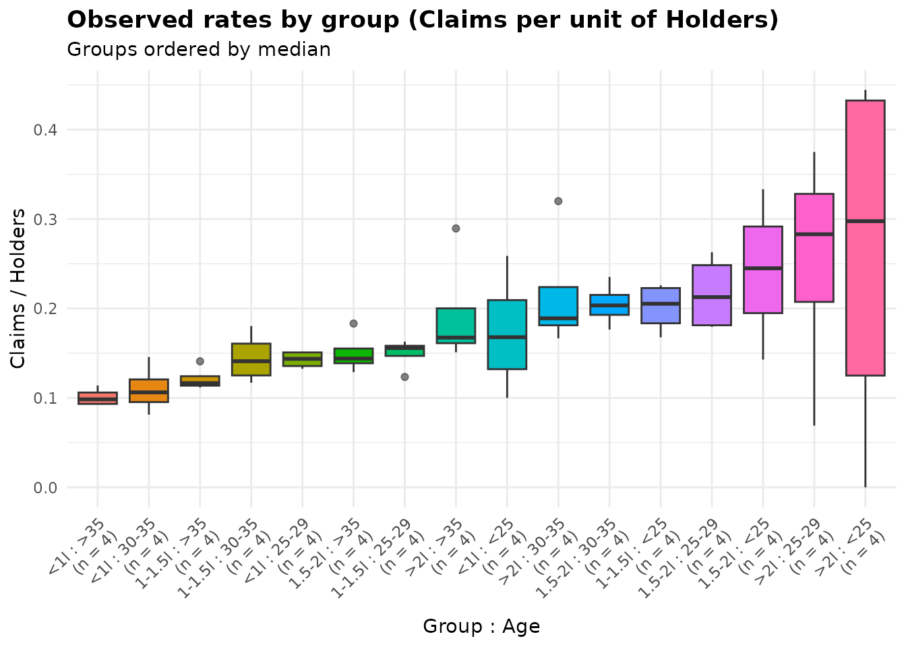
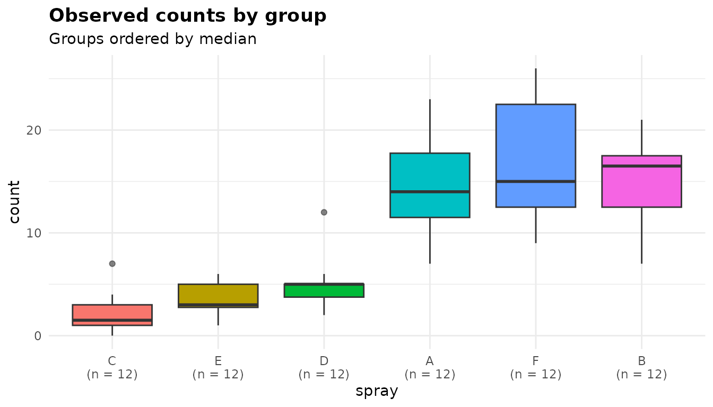

Counts and rates: analysis of deviance with anova_count()
Source:vignettes/articles/counts.Rmd
counts.Rmdanova_count() fits a regression for a count response
(the number of breaks, claims, visits or incidents) across one or more
grouping variables. It starts from a Poisson model, checks it for
overdispersion, moves to a negative binomial model when the counts are
more variable than a Poisson allows, and reports an analysis of deviance
table, incidence rate ratios, estimated marginal rates and pairwise rate
ratios. With an exposure column (time at risk, number of policies) it
compares rates rather than counts. For a yes/no outcome use
anova_bin() (walkthrough); for
other response distributions, anova_glm() (walkthrough). The decision
guide covers the choice in more detail.
The data
warpbreaks records the number of warp breaks on each of
54 looms, where a loom corresponds to a fixed length of yarn, for two
types of wool (A, B) at three levels of
tension (L, M, H): a 2 by 3
factorial experiment with 9 looms in each cell.
head(warpbreaks)
#> breaks wool tension
#> 1 26 A L
#> 2 30 A L
#> 3 54 A L
#> 4 25 A L
#> 5 70 A L
#> 6 52 A L
table(warpbreaks$wool, warpbreaks$tension)
#>
#> L M H
#> A 9 9 9
#> B 9 9 9
aggregate(breaks ~ wool + tension, data = warpbreaks,
FUN = function(x) round(c(mean = mean(x), variance = var(x)), 1))
#> wool tension breaks.mean breaks.variance
#> 1 A L 44.6 327.5
#> 2 B L 28.2 97.2
#> 3 A M 24.0 75.0
#> 4 B M 28.8 88.9
#> 5 A H 24.6 105.5
#> 6 B H 18.8 23.9The breaks are counts, so a Poisson model is the natural starting point. A Poisson distribution has its variance equal to its mean, and here the variance within each cell is between 1.3 and 7.4 times the mean. The counts are overdispersed, and dealing with that is the first thing the function does.
Fitting the model
Columns are named as character strings: the response, then the grouping variables. This is a designed factorial experiment, and whether the effect of tension depends on the wool is part of the question, so the model includes the interaction:
fit <- anova_count(warpbreaks, "breaks", c("wool", "tension"),
interaction = TRUE)
fit
#> Analysis of deviance for a count response (negbin regression)
#> -------------------------------------------------------------
#> Call: anova_count(data = warpbreaks, response = "breaks", groups = c("wool", "tension"), interaction = TRUE)
#> Observations used: 54
#>
#> Omnibus test (Type II, likelihood-ratio chi-square)
#> term df statistic p_value
#> 1 wool 1 3.905 0.04814
#> 2 tension 2 20.220 4.068e-05
#> 3 wool:tension 2 8.206 0.01652
#>
#> Notes
#> - Pearson dispersion is 3.76, above the threshold of 1.50, so a negative binomial model was fitted instead of Poisson. Set model = "poisson" to override.
#> - Negative binomial dispersion parameter theta = 12.082 (SE 3.300), so the variance is about mu + mu^2/12.1. With 9 observations in the smallest group, the likelihood-ratio tests and Wald intervals are markedly anti-conservative: at 5-10 observations per group, nominal 5% tests reject roughly 10-15% of true null hypotheses (2-3 times too often) and 95% intervals, including the pairwise comparisons, cover only about 89-93%. Treating theta as known explains only part of this; the rest is small-sample asymptotics. model = "quasipoisson" (F tests) is better calibrated at this size.
#>
#> Plots available: emmeans, observed
#> (use plot(x, which = "emmeans"))Reading the printout from the top:
- The method names the model actually fitted: a negative binomial regression, not the Poisson one you might have expected.
-
Observations used: 54, all of them. - The omnibus table, headed with what it holds: Type II tests, likelihood-ratio chi-square statistics.
- The notes: why the model is negative binomial, and a warning about what its tests are worth with 9 looms per cell. Both are discussed in the next section and below.
- The plots that were built (they are not drawn until you ask).
summary(fit) prints this plus the assumption checks, the
rate ratios, the marginal means and the pairwise comparisons.
Poisson, negative binomial or quasi-Poisson?
The model argument decides the model. Its default,
"auto", fits a Poisson model first and computes its Pearson
dispersion: the sum of squared Pearson residuals divided by the residual
degrees of freedom, which is about 1 when the Poisson variance is right.
Above overdispersion_threshold (1.5 by default) the
function fits a negative binomial model instead, which needs the
MASS package (without it, or if that fit fails, it uses
quasi-Poisson). $model_type records the outcome:
fit$model_type
#> [1] "negbin"
fit$dispersion
#> [1] 3.763881
fit$model_dispersion
#> [1] 1.079551$dispersion is the Pearson dispersion of the
Poisson fit, the statistic the decision was made on: 3.76, well
above 1.5. $model_dispersion is the same statistic for the
model actually returned. At 1.08 it says the negative binomial’s
variance function, mu + mu^2 / theta, has absorbed the
extra variation. The second note gives theta, 12.1, and goes on to say
something important: with 9 observations per cell the negative
binomial’s likelihood-ratio tests and Wald intervals are markedly
anti-conservative, and quasi-Poisson F tests are better calibrated at
this size.
Set model yourself to take the decision out of the
function’s hands. Here is the interaction test under each of the three
models:
models <- c("poisson", "quasipoisson", "negbin")
fits <- lapply(models, function(m)
anova_count(warpbreaks, "breaks", c("wool", "tension"), interaction = TRUE,
model = m, plots = FALSE))
data.frame(model = vapply(fits, `[[`, "", "model_type"),
test = vapply(fits, function(f) attr(f$anova, "statistic"), ""),
statistic = vapply(fits, function(f) f$anova$statistic[3], 0),
p_value = vapply(fits, function(f) f$anova$p_value[3], 0))
#> model test statistic p_value
#> 1 poisson likelihood-ratio chi-square 28.086757 7.962292e-07
#> 2 quasipoisson F 3.731090 3.117908e-02
#> 3 negbin likelihood-ratio chi-square 8.205982 1.652318e-02The Poisson model, which ignores the overdispersion, puts the p-value
for the interaction below one in a million. Both models that allow for
it put it between 0.01 and 0.05. An explicit
model = "poisson" is kept even on data like these, but not
silently:
fits[[1]]$notes[1]
#> [1] "Pearson dispersion is 3.76, above the threshold of 1.50: the counts are overdispersed relative to Poisson. model = \"poisson\" was requested, so the Poisson model was kept. A Poisson model assumes a dispersion of 1; at 3.76 (Pearson test of overdispersion: p < 2.2e-16) its likelihood-ratio and Wald statistics are inflated by about that factor and its standard errors are about 1.94 times too small, so its intervals are too narrow and a nominal 5% test on 1 degree of freedom rejects roughly 31% of true null hypotheses. Use model = \"quasipoisson\" or \"negbin\" when that matters."The note puts a size on the problem: at a dispersion of 3.76, a nominal 5% test rejects roughly 31% of true null hypotheses, six times as often as it should.
The quasi-Poisson model keeps the Poisson estimates and scales their variance by the estimated dispersion. It has no likelihood, so its table uses F tests:
fits[[2]]$anova
#> term sum_sq df statistic p_value
#> 1 wool 16.03875 1 4.261227 0.0444186297
#> 2 tension 70.94157 2 9.423991 0.0003529152
#> 3 wool:tension 28.08676 2 3.731090 0.0311790844
#> 4 Residuals 180.66630 48 NA NA
fits[[2]]$notes
#> [1] "A quasi-Poisson model has no likelihood, so the analysis of deviance uses an F test rather than a likelihood ratio test."overdispersion_threshold moves the cut-off for
model = "auto". It is a fixed cut-off, not a test, and a
Poisson model kept below it still gets the note on inflated statistics
when the dispersion is beyond what chance would produce:
lenient <- anova_count(warpbreaks, "breaks", c("wool", "tension"),
interaction = TRUE, overdispersion_threshold = 5,
plots = FALSE)
lenient$model_type
#> [1] "poisson"
lenient$notes
#> [1] "Pearson dispersion is 3.76, at or below the threshold of 5.00, so a Poisson model was kept. A Poisson model assumes a dispersion of 1; at 3.76 (Pearson test of overdispersion: p < 2.2e-16) its likelihood-ratio and Wald statistics are inflated by about that factor and its standard errors are about 1.94 times too small, so its intervals are too narrow and a nominal 5% test on 1 degree of freedom rejects roughly 31% of true null hypotheses. Use model = \"quasipoisson\" or \"negbin\" when that matters."Which to use? The negative binomial is a full likelihood model, and with more data per group it is usually the better choice. With groups as small as these, the note’s advice to prefer quasi-Poisson is worth taking for the tests; the rest of this article stays with the automatic choice so that you can see what it reports.
The omnibus test
fit$anova
#> term df statistic p_value
#> 1 wool 1 3.905167 4.813785e-02
#> 2 tension 2 20.219447 4.068205e-05
#> 3 wool:tension 2 8.205982 1.652318e-02Each row is a likelihood-ratio test: statistic is the
increase in deviance when the term is dropped (with theta held at its
estimate), referred to a chi-square distribution on df
degrees of freedom. Type II means each main effect is tested after the
other and without the interaction, and the interaction after both. The
wool:tension row says the effect of tension depends on the
wool (p = 0.017), so the main effects cannot be read on their own; the
rate ratios and marginal means below show what the interaction looks
like.
Effect sizes: rate ratios
$effect_sizes holds incidence rate ratios (IRRs), each a
level of a factor against its reference (first) level:
print(fit$effect_sizes, digits = 3)
#> term factor comparison IRR conf_low conf_high
#> 1 woolB wool B vs A at tension = L 0.633 0.465 0.863
#> 2 tensionM tension M vs L at wool = A 0.539 0.394 0.737
#> 3 tensionH tension H vs L at wool = A 0.551 0.403 0.753
#> 4 woolB:tensionM wool:tension (B vs A) x (M vs L) 1.893 1.212 2.956
#> 5 woolB:tensionH wool:tension (B vs A) x (H vs L) 1.207 0.767 1.901
#> p_value
#> 1 0.003753
#> 2 0.000107
#> 3 0.000186
#> 4 0.005008
#> 5 0.416123An IRR is the ratio of two expected counts (or two rates, with an
offset): 1 means no difference, 0.5 half as many, 2 twice as many.
factor names the grouping variable and
comparison says what is compared. In a model with an
interaction, a main-effect ratio holds at the reference level of the
factor it interacts with: B vs A at tension = L says wool B
has 0.63 times the breaks of wool A at low tension. The
interaction rows are ratios of rate ratios:
(B vs A) x (M vs L) is 1.89, meaning the B-to-A ratio at
medium tension is 1.89 times the B-to-A ratio at low tension.
The intervals are Wald intervals on the log scale, exponentiated, and
p_value tests each ratio against 1. They are always
computed under treatment (reference) coding, whatever type
or the global contrasts option; term gives the
name of the coefficient in that coding.
Marginal means and comparisons
$emmeans holds the estimated marginal means on the count
scale, here the expected breaks per loom in each cell, with intervals
built on the log scale and back-transformed:
print(fit$emmeans, digits = 3)
#> wool tension estimate se df conf_low conf_high
#> 1 A L 44.6 4.82 Inf 36.0 55.1
#> 2 B L 28.2 3.23 Inf 22.5 35.3
#> 3 A M 24.0 2.82 Inf 19.1 30.2
#> 4 B M 28.8 3.29 Inf 23.0 36.0
#> 5 A H 24.6 2.88 Inf 19.5 30.9
#> 6 B H 18.8 2.31 Inf 14.8 23.9With the full interaction in the model these are the cell means of
the data; the model’s contribution is the intervals.
$posthoc compares every pair of cells, as rate ratios:
print(fit$posthoc[, c("contrast", "IRR", "conf_low", "conf_high", "p_value",
"p_adjusted", "adjustment")], digits = 3)
#> contrast IRR conf_low conf_high p_value p_adjusted adjustment
#> 1 A L / B L 1.579 1.008 2.47 3.75e-03 4.35e-02 tukey
#> 2 A L / A M 1.856 1.178 2.93 1.07e-04 1.50e-03 tukey
#> 3 A L / B M 1.548 0.989 2.42 5.46e-03 6.09e-02 tukey
#> 4 A L / A H 1.814 1.152 2.86 1.86e-04 2.56e-03 tukey
#> 5 A L / B H 2.373 1.488 3.78 1.31e-07 1.95e-06 tukey
#> 6 B L / A M 1.176 0.737 1.88 3.24e-01 9.22e-01 tukey
#> 7 B L / B M 0.981 0.618 1.56 9.04e-01 1.00e+00 tukey
#> 8 B L / A H 1.149 0.720 1.83 3.96e-01 9.58e-01 tukey
#> 9 B L / B H 1.503 0.931 2.43 1.53e-02 1.48e-01 tukey
#> 10 A M / B M 0.834 0.523 1.33 2.68e-01 8.79e-01 tukey
#> 11 A M / A H 0.977 0.609 1.57 8.90e-01 1.00e+00 tukey
#> 12 A M / B H 1.278 0.787 2.08 1.49e-01 7.01e-01 tukey
#> 13 B M / A H 1.172 0.735 1.87 3.32e-01 9.28e-01 tukey
#> 14 B M / B H 1.533 0.950 2.47 1.10e-02 1.12e-01 tukey
#> 15 A H / B H 1.308 0.806 2.12 1.14e-01 6.12e-01 tukeyIRR is the rate of the first cell in
contrast divided by the rate of the second.
p_value is unadjusted and p_adjusted is
adjusted for all 15 comparisons by the method in adjustment
(Tukey by default; adjust changes it). The intervals are
simultaneous.
Most of those comparisons (A L / B M, say) answer no
question anyone asked. For the comparisons of tensions within each wool,
pass $emmeans_object to emmeans:
emmeans::contrast(fit$emmeans_object, method = "pairwise", by = "wool")
#> wool = A:
#> contrast ratio SE df null z.ratio p.value
#> L / M 1.856 0.297 Inf 1 3.873 0.0003
#> L / H 1.814 0.289 Inf 1 3.738 0.0005
#> M / H 0.977 0.162 Inf 1 -0.138 0.9896
#>
#> wool = B:
#> contrast ratio SE df null z.ratio p.value
#> L / M 0.981 0.159 Inf 1 -0.120 0.9920
#> L / H 1.503 0.253 Inf 1 2.424 0.0406
#> M / H 1.533 0.257 Inf 1 2.544 0.0295
#>
#> P value adjustment: tukey method for comparing a family of 3 estimates
#> Tests are performed on the log scaleWith wool A, low tension gives clearly more breaks than medium or high, which do not differ. With wool B, high tension gives fewer breaks than the other two, less decisively.
Rates: counts with an exposure
Counts are often collected over different amounts of exposure: more
policyholders, longer follow-up, larger areas.
MASS::Insurance gives the number of car insurance claims in
64 groups of policyholders, by district, car group (engine size) and
driver age, together with the number of policyholders in each group.
District is left out below to keep the example small.
ins <- MASS::Insurance
head(ins)
#> District Group Age Holders Claims
#> 1 1 <1l <25 197 38
#> 2 1 <1l 25-29 264 35
#> 3 1 <1l 30-35 246 20
#> 4 1 <1l >35 1680 156
#> 5 1 1-1.5l <25 284 63
#> 6 1 1-1.5l 25-29 536 84A group with 1,000 policyholders will have more claims than one with
100, so the counts must be compared per policyholder. Name the exposure
column in offset. Give it on its natural scale: the
function takes the logarithm itself and enters it as
offset(log(Holders)) in the model formula.
ins_fit <- anova_count(ins, "Claims", c("Group", "Age"), offset = "Holders")
ins_fit
#> Analysis of deviance for a count response (poisson regression)
#> --------------------------------------------------------------
#> Call: anova_count(data = ins, response = "Claims", groups = c("Group", "Age"), offset = "Holders")
#> Observations used: 64
#>
#> Omnibus test (Type II, likelihood-ratio chi-square)
#> term df statistic p_value
#> 1 Group 3 90.10 < 2.2e-16
#> 2 Age 3 82.62 < 2.2e-16
#>
#> Notes
#> - Pearson dispersion is 1.14, at or below the threshold of 1.50, so a Poisson model was kept.
#> - The grouping factors enter the model additively, so $emmeans and $posthoc are reported for each factor separately, averaged over the others (column `term`), and each factor's comparisons are a separate multiplicity family. Set interaction = TRUE to compare cells instead.
#> - Estimated marginal means are rates at Holders = 1 (one unit of exposure).
#>
#> Plots available: emmeans, observed
#> (use plot(x, which = "emmeans"))
print(formula(ins_fit$model), showEnv = FALSE)
#> Claims ~ Group + Age + offset(log(Holders))Here the Poisson model was kept: the dispersion, 1.14, is below the threshold and within what chance produces (a Pearson test of overdispersion on its 57 residual degrees of freedom gives p = 0.22), so there is no note on inflation. Both factors matter:
print(ins_fit$effect_sizes, digits = 3)
#> term factor comparison IRR conf_low conf_high p_value
#> 1 Group1-1.5l Group 1-1.5l vs <1l 1.176 1.066 1.299 1.30e-03
#> 2 Group1.5-2l Group 1.5-2l vs <1l 1.484 1.332 1.653 7.09e-13
#> 3 Group>2l Group >2l vs <1l 1.767 1.534 2.036 3.24e-15
#> 4 Age25-29 Age 25-29 vs <25 0.829 0.705 0.976 2.39e-02
#> 5 Age30-35 Age 30-35 vs <25 0.714 0.609 0.837 3.36e-05
#> 6 Age>35 Age >35 vs <25 0.590 0.515 0.677 4.27e-14The rate ratios are now ratios of claims per policyholder:
drivers aged over 35 make 0.59 times as many claims per policy as
drivers under 25 with the same size of car, and cars over 2 litres 1.77
times as many as cars under 1 litre. (Group and
Age are ordered factors. The rate ratios compare levels
with the first level all the same, as they would for unordered
factors.)
The marginal means are rates at an exposure of 1, which a note records: claims per policyholder. The unit of the exposure is the unit of the rate, so to report claims per thousand policyholders, give the exposure in thousands:
ins$thousands <- ins$Holders / 1000
per_1000 <- anova_count(ins, "Claims", c("Group", "Age"),
offset = "thousands", plots = FALSE)
print(per_1000$emmeans, digits = 3)
#> term Group Age estimate se df conf_low conf_high
#> 1 Group <1l <NA> 128 5.85 Inf 117 140
#> 2 Group 1-1.5l <NA> 150 4.71 Inf 141 160
#> 3 Group 1.5-2l <NA> 189 7.16 Inf 176 204
#> 4 Group >2l <NA> 226 13.66 Inf 200 254
#> 5 Age <NA> <25 220 14.80 Inf 193 251
#> 6 Age <NA> 25-29 183 9.29 Inf 165 202
#> 7 Age <NA> 30-35 157 7.58 Inf 143 173
#> 8 Age <NA> >35 130 3.21 Inf 124 136
grep("exposure", per_1000$notes, value = TRUE)
#> [1] "Estimated marginal means are rates at thousands = 1 (one unit of exposure)."
all.equal(per_1000$effect_sizes, ins_fit$effect_sizes)
#> [1] TRUEThe rate ratios, and everything else except the scale of the marginal
means, are unchanged. The model is additive, so the marginal rates are
reported for each factor separately, averaged over the other (the
term column), and $posthoc compares levels
within each factor:
print(per_1000$posthoc[, c("term", "contrast", "IRR", "conf_low", "conf_high",
"p_adjusted")], digits = 3)
#> term contrast IRR conf_low conf_high p_adjusted
#> 1 Group <1l / (1-1.5l) 0.850 0.747 0.968 7.11e-03
#> 2 Group <1l / (1.5-2l) 0.674 0.585 0.776 4.28e-12
#> 3 Group <1l / >2l 0.566 0.470 0.681 7.74e-14
#> 4 Group (1-1.5l) / (1.5-2l) 0.793 0.710 0.885 4.03e-07
#> 5 Group (1-1.5l) / >2l 0.666 0.565 0.784 9.01e-10
#> 6 Group (1.5-2l) / >2l 0.840 0.707 0.998 4.54e-02
#> 7 Age <25 / (25-29) 1.206 0.975 1.492 1.08e-01
#> 8 Age <25 / (30-35) 1.401 1.137 1.726 1.97e-04
#> 9 Age <25 / >35 1.694 1.416 2.026 2.81e-13
#> 10 Age (25-29) / (30-35) 1.162 0.975 1.385 1.25e-01
#> 11 Age (25-29) / >35 1.405 1.221 1.615 2.54e-09
#> 12 Age (30-35) / >35 1.209 1.058 1.381 1.47e-03Checking assumptions
$assumptions has three elements, each documented in
?anova_count:
fit$assumptions
#> $poisson_dispersion
#> [1] 3.763881
#>
#> $model_dispersion
#> [1] 1.079551
#>
#> $cell_counts
#> cell n
#> 1 A : L 9
#> 2 B : L 9
#> 3 A : M 9
#> 4 B : M 9
#> 5 A : H 9
#> 6 B : H 9-
poisson_dispersionis the Pearson dispersion of the Poisson fit (the same number as$dispersion). Near 1 the Poisson variance is adequate; well above it, the counts are overdispersed. Below 1 they are underdispersed, which is rarer and makes Poisson tests conservative. -
model_dispersionis the same statistic for the model returned (the same number as$model_dispersion). For a negative binomial fit, a value near 1 says the variance function fits; one well above 1 says it does not, and that a model for the source of the extra variation (a missing grouping variable, clustering) is needed. -
cell_countsis the number of observations in each cell of the design (with frequency weights it adds the number of table rows; see below). Small cells are where the asymptotic tests are least trustworthy, as the note on theta said.
The model also assumes independent counts and that the log rate is additive in the terms included, which the interaction test checks for the grouping factors. More on the checks across the package is in the diagnostics article.
A group with no events
When a group has no events at all, its fitted rate is zero, the log
of it is minus infinity, and every rate ratio involving it is undefined.
glm() still reports convergence, with an enormous negative
coefficient. To show what the function does, here are simulated weekly
incident counts at three sites; the true rate at east is
0.05 a week, small but not zero, and in ten weeks it had no
incidents:
set.seed(1)
incidents <- data.frame(
site = factor(rep(c("north", "south", "east"), each = 10),
levels = c("north", "south", "east")),
events = c(rpois(10, 2), rpois(10, 4), rpois(10, 0.05))
)
tapply(incidents$events, incidents$site, sum)
#> north south east
#> 21 44 0
zero_fit <- anova_count(incidents, "events", "site")
zero_fit
#> Analysis of deviance for a count response (poisson regression)
#> --------------------------------------------------------------
#> Call: anova_count(data = incidents, response = "events", groups = "site")
#> Observations used: 30
#>
#> Omnibus test (Type II, likelihood-ratio chi-square)
#> term df statistic p_value
#> 1 site 2 61.03 5.597e-14
#>
#> Notes
#> - 1 group combination(s) hold fewer than 5 events in total; their rates, and any rate ratio involving them, rest on very little information, so their Wald intervals and p-values are unreliable.
#> - Pearson dispersion is 0.74, at or below the threshold of 1.50, so a Poisson model was kept.
#> - No events were observed in site = east, so the fitted rate there is numerically zero. The affected coefficient(s): siteeast. A rate ratio involving such a cell is not identified: it will be near zero or enormous, its interval unbounded on one side, and its Wald p-value near 1 no matter how large the difference is; the same goes for that cell's marginal mean and the comparisons involving it. The likelihood-ratio omnibus test remains usable. Consider collapsing the level, or an exact or penalised method for the affected comparisons.
#> - The rate ratio(s) for siteeast involve a cell with no events, so the interval is open on that side (0 or Inf). The finite end was found by profiling the likelihood directly, where a Wald interval would run from 0 to Inf.
#>
#> Plots available: emmeans, observed
#> (use plot(x, which = "emmeans"))Two notes flag the problem. The first counts the groups with fewer than 5 events in total, whose rates rest on very little information. The third names the group with no events, says that the rate ratios involving it, its marginal mean and the comparisons involving it are unreliable, and says what still works. The results bear it out:
print(zero_fit$effect_sizes, digits = 3)
#> term factor comparison IRR conf_low conf_high p_value
#> 1 sitesouth site south vs north 2.10e+00 1.25 3.5237 0.00529
#> 2 siteeast site east vs north 1.97e-09 0.00 0.0958 0.99463
print(zero_fit$posthoc[, c("contrast", "IRR", "conf_low", "conf_high",
"p_adjusted")], digits = 3)
#> contrast IRR conf_low conf_high p_adjusted
#> 1 north / south 4.77e-01 2.56e-01 0.889 0.0146
#> 2 north / east 5.07e+08 2.22e-16 Inf 1.0000
#> 3 south / east 1.06e+09 2.22e-16 Inf 1.0000east vs north is estimated as practically zero, with an
interval from 0 to infinity and a p-value of 0.99: the Wald machinery
has nothing to work with, however clear the difference. The
likelihood-ratio test in the omnibus table does work, and it is the
number to report for the overall comparison. For the rate ratios
involving east, follow the note’s advice: collapse the
level with another, or use an exact method. A robust covariance would
fail here too, and vcov_type falls back to the model-based
one with a note saying so:
grep("Robust", anova_count(incidents, "events", "site", vcov_type = "HC3",
plots = FALSE)$notes, value = TRUE)
#> [1] "Robust standard errors (HC3) were not used: some fitted values are on the boundary (a group with no events, or all events), where the sandwich covariance collapses towards zero and reports spuriously small p-values. Model-based standard errors were used instead."Plots
fit$plots holds two ggplot2 objects,
returned rather than drawn. Use plot(fit, "name") or
fit$plots$name to get one.
plot(fit, "emmeans")
The emmeans plot shows the estimated marginal means with
their intervals. The first grouping variable goes on the x axis and the
second becomes the colour, one line per level. What to look for: lines
that are not parallel show an interaction. For wool A, low tension
stands well above medium and high; for wool B, low and medium are
together and high is lowest. The low-tension line falls steeply from A
to B while the medium one rises, so the lines are far from parallel.
plot(fit, "observed")
The observed plot is a box plot of the raw counts in
each cell, ordered by median and labelled with the cell’s number of
observations. What to look for: spread that grows with the median
(expected for counts, and what the negative binomial’s variance function
allows for), outlying looms, and whether the order of the medians agrees
with the marginal means.
With an offset, raw counts would mostly show where the exposure is, so the plot shows observed rates instead: each row’s count divided by its exposure, here claims per policyholder.
plot(ins_fit, "observed")
The title and the y axis name the rate. The order of the boxes
follows the rate ratios: the lowest median is for drivers over 35 with
the smallest cars (<1l : >35), the highest for
drivers under 25 with the largest (>2l : <25). What
to look for is the same as before, plus one thing: a rate computed from
a small exposure is noisy. The widest box, >2l : <25,
comes from the four groups of young drivers of large cars, which hold
between 3 and 24 policyholders each.
The plot should tell the same story as the marginal rates. A quick check is to pool the claims and policyholders by age band:
by_age <- aggregate(cbind(Claims, Holders) ~ Age, data = ins, FUN = sum)
by_age$rate <- by_age$Claims / by_age$Holders
by_age
#> Age Claims Holders rate
#> 1 <25 229 1138 0.2012302
#> 2 25-29 404 2336 0.1729452
#> 3 30-35 453 3007 0.1506485
#> 4 >35 2065 16878 0.1223486
ins_fit$emmeans[ins_fit$emmeans$term == "Age", c("Age", "estimate")]
#> Age estimate
#> 5 <25 0.2201177
#> 6 25-29 0.1825590
#> 7 30-35 0.1571197
#> 8 >35 0.1299627The pooled rates fall with age, as the marginal rates do. They are
not the same numbers: the marginal rates are adjusted for car group and
average over the four car groups equally, while the pooled rates are
weighted by where the policyholders are. Each plot is a ggplot and can
be modified with +; the plots
article has more.
Options worth knowing
interaction
The model is additive by default. An additive model gives each factor’s effect averaged over the other, which is what you want when the interaction is absent and misleading when it is not. For comparison, the additive fit of the same data reports marginal means for each factor separately:
additive <- anova_count(warpbreaks, "breaks", c("wool", "tension"),
plots = FALSE)
additive$anova
#> term df statistic p_value
#> 1 wool 1 3.366537 0.0665334745
#> 2 tension 2 17.544863 0.0001549464
print(additive$emmeans, digits = 3)
#> term wool tension estimate se df conf_low conf_high
#> 1 wool A <NA> 30.1 2.12 Inf 26.2 34.5
#> 2 wool B <NA> 25.0 1.80 Inf 21.7 28.8
#> 3 tension <NA> L 35.9 3.03 Inf 30.4 42.3
#> 4 tension <NA> M 26.6 2.33 Inf 22.4 31.6
#> 5 tension <NA> H 21.5 1.95 Inf 18.0 25.7The wool rows average over tensions, hiding the fact that the wool difference runs in opposite directions at low and medium tension. Decide on the interaction before looking at the answers, as the design here justified.
test_statistic
"LR" (the default) gives likelihood-ratio tests;
"Wald" gives Wald chi-square tests; "F" gives
F tests, which is what a quasi-Poisson model uses anyway. On a negative
binomial (or Poisson) model, "F" estimates a dispersion
from the Pearson residuals and divides the deviances by it, which makes
the table a quasi-likelihood test while the rate ratios still assume the
model’s own dispersion. The note says so:
wald_fit <- anova_count(warpbreaks, "breaks", c("wool", "tension"),
interaction = TRUE, test_statistic = "Wald",
plots = FALSE)
wald_fit$anova
#> term df statistic p_value
#> 1 wool 1 3.911328 4.796169e-02
#> 2 tension 2 19.705948 5.259056e-05
#> 3 wool:tension 2 8.210214 1.648826e-02
f_fit <- anova_count(warpbreaks, "breaks", c("wool", "tension"),
interaction = TRUE, test_statistic = "F", plots = FALSE)
f_fit$anova
#> term sum_sq df statistic p_value
#> 1 wool 3.905167 1 3.617398 0.0631884661
#> 2 tension 20.219447 2 9.364745 0.0003682666
#> 3 wool:tension 8.205982 2 3.800644 0.0293598000
#> 4 Residuals 51.818468 48 NA NA
grep("test_statistic", f_fit$notes, value = TRUE)
#> [1] "test_statistic = \"F\" was requested for a negative binomial model, so car::Anova() estimated a dispersion from the Pearson residuals (1.08) and divided the deviance by it: the analysis of deviance is a quasi-likelihood F test. $effect_sizes and $posthoc still assume a dispersion of 1, so they can disagree with it. Use model = \"quasipoisson\" for quasi-likelihood inference throughout."For quasi-likelihood inference throughout, use
model = "quasipoisson".
vcov_type
vcov_type requests heteroskedasticity-consistent
(sandwich) standard errors, "HC0" to "HC4",
from the sandwich package. They reach the rate ratios,
the marginal means and the comparisons. A likelihood-ratio test compares
deviances and cannot use them, so the omnibus table uses them only with
test_statistic = "Wald":
robust <- anova_count(warpbreaks, "breaks", c("wool", "tension"),
interaction = TRUE, vcov_type = "HC3",
test_statistic = "Wald", plots = FALSE)
robust$anova
#> term df statistic p_value
#> 1 wool 1 2.526565 0.1119436981
#> 2 tension 2 16.808766 0.0002238839
#> 3 wool:tension 2 6.765016 0.0339621730
data.frame(comparison = fit$effect_sizes$comparison,
model_low = fit$effect_sizes$conf_low,
model_high = fit$effect_sizes$conf_high,
hc3_low = robust$effect_sizes$conf_low,
hc3_high = robust$effect_sizes$conf_high)
#> comparison model_low model_high hc3_low hc3_high
#> 1 B vs A at tension = L 0.4651349 0.8625808 0.4369807 0.9181560
#> 2 M vs L at wool = A 0.3938590 0.7366784 0.3696585 0.7849066
#> 3 H vs L at wool = A 0.4032354 0.7532465 0.3679333 0.8255184
#> 4 (B vs A) x (M vs L) 1.2122753 2.9560520 1.1459874 3.1270404
#> 5 (B vs A) x (H vs L) 0.7667100 1.9009866 0.7290004 1.9993205
grep("robust", robust$notes, value = TRUE)
#> [1] "The omnibus Wald test uses the robust (HC3) covariance, as the coefficient table, the marginal means and the comparisons do."The robust intervals are wider here: with 9 looms a cell, the sandwich estimate is noisy, and it is better used as a check on the model-based standard errors than as a replacement for them.
Frequency weights
A table of counts with a column saying how often each count occurred
is a frequency table. weights names that column, and
whole-number weights (some above 1) are read as frequencies: each row
stands for that many identical observations. InsectSprays
has 12 insect counts for each of six sprays; here it is as a frequency
table:
spray_tab <- as.data.frame(table(spray = InsectSprays$spray,
count = InsectSprays$count),
stringsAsFactors = FALSE)
spray_tab <- spray_tab[spray_tab$Freq > 0, ]
spray_tab$count <- as.numeric(spray_tab$count)
head(spray_tab)
#> spray count Freq
#> 3 C 0 2
#> 9 C 1 4
#> 11 E 1 2
#> 15 C 2 2
#> 16 D 2 1
#> 17 E 2 1
c(rows = nrow(spray_tab), observations = sum(spray_tab$Freq))
#> rows observations
#> 43 72The frequency table and the original 72 rows give the same analysis:
from_rows <- anova_count(InsectSprays, "count", "spray", plots = FALSE)
from_table <- anova_count(spray_tab, "count", "spray", weights = "Freq",
plots = FALSE)
c(rows = from_rows$dispersion, table = from_table$dispersion)
#> rows table
#> 1.507713 1.507713
c(rows = from_rows$model_type, table = from_table$model_type)
#> rows table
#> "negbin" "negbin"
all.equal(from_rows$anova, from_table$anova)
#> [1] TRUE
all.equal(from_rows$effect_sizes, from_table$effect_sizes)
#> [1] TRUE
all.equal(from_rows$emmeans, from_table$emmeans)
#> [1] TRUE
from_table$notes
#> [1] "Pearson dispersion is 1.51, above the threshold of 1.50, so a negative binomial model was fitted instead of Poisson. Set model = \"poisson\" to override."
#> [2] "The weights in `Freq` are whole numbers, so they are treated as frequency weights: each row stands for that many observations. The Pearson dispersion divides by the 72 observations they represent minus the 6 parameters, not by the 43 rows, which would inflate it."
#> [3] "Negative binomial dispersion parameter theta = 28.100 (SE 17.700), so the variance is about mu + mu^2/28.1. Theta is poorly determined, but it is large: the data are only weakly overdispersed, and model = \"poisson\" would give a similar answer. With 12 observations in the smallest group, the likelihood-ratio tests and Wald intervals are moderately anti-conservative: at 10-30 observations per group, nominal 5% tests reject roughly 6-10% of true null hypotheses and 95% intervals cover about 91-95%."The dispersion is the same in both, because with frequency weights it
divides by the number of observations the weights represent (minus the
number of parameters), not by the number of rows. Dividing by rows, as
glm()’s own residual degrees of freedom would, inflates
it:
pois_table <- glm(count ~ spray, family = poisson, data = spray_tab,
weights = Freq)
sum(residuals(pois_table, type = "pearson")^2) / df.residual(pois_table)
#> [1] 2.689433That inflation could switch a Poisson model to a negative binomial
one for no reason. (Here both values are above the threshold, so the
choice would be the same either way; the correct one, 1.508, is only
just above it, and the theta note says the negative binomial has only
weakly overdispersed data to work with.) With vcov_type,
the sandwich is also computed as it would be on the expanded data:
hc_rows <- anova_count(InsectSprays, "count", "spray", vcov_type = "HC3",
plots = FALSE)
hc_table <- anova_count(spray_tab, "count", "spray", weights = "Freq",
vcov_type = "HC3", plots = FALSE)
all.equal(hc_rows$effect_sizes, hc_table$effect_sizes)
#> [1] TRUEWith frequency weights, $assumptions$cell_counts gives
both sizes: n is the number of observations in each cell
(the sum of the weights) and rows the number of rows of the
table behind them.
from_table$assumptions$cell_counts
#> cell n rows
#> 1 A 12 8
#> 2 B 12 8
#> 3 C 12 6
#> 4 D 12 6
#> 5 E 12 6
#> 6 F 12 9The observed plot draws the observations too, expanding
the table, so it is the same plot the 72 original rows give, with 12
observations per spray:
plot(anova_count(spray_tab, "count", "spray", weights = "Freq"), "observed")
A table that stands for more than 200,000 observations is not expanded; the plot then shows one point per row, and a note says so:
big_tab <- transform(spray_tab, Freq = Freq * 5000)
big_fit <- anova_count(big_tab, "count", "spray", weights = "Freq")
grep("200,000", big_fit$notes, value = TRUE)
#> [1] "The plot of observed counts shows one point per row of the frequency table, not per observation: the table stands for more than 200,000 observations."
type, adjust, conf_level and
posthoc
type = "III" fits the model under sum-to-zero contrasts,
which changes the main-effect rows of $anova when there is
an interaction; the rate ratios are unchanged.
posthoc = FALSE skips the pairwise comparisons, with a
note:
type3 <- anova_count(warpbreaks, "breaks", c("wool", "tension"),
interaction = TRUE, type = "III", posthoc = FALSE,
plots = FALSE)
type3$anova
#> term df statistic p_value
#> 1 wool 1 3.665426 5.555243e-02
#> 2 tension 2 19.383565 6.178918e-05
#> 3 wool:tension 2 8.205982 1.652318e-02
all.equal(type3$effect_sizes, fit$effect_sizes)
#> [1] TRUE
grep("posthoc|still reports", type3$notes, value = TRUE)
#> [1] "Pairwise comparisons were not computed (posthoc = FALSE); there would have been 15."
#> [2] "$effect_sizes still reports the incidence rate ratios from the model."adjust sets the multiplicity adjustment for
$posthoc and conf_level the level of every
interval, as in the other model-based functions; the binary-outcomes walkthrough shows both.
What the notes say
fit$notes
#> [1] "Pearson dispersion is 3.76, above the threshold of 1.50, so a negative binomial model was fitted instead of Poisson. Set model = \"poisson\" to override."
#> [2] "Negative binomial dispersion parameter theta = 12.082 (SE 3.300), so the variance is about mu + mu^2/12.1. With 9 observations in the smallest group, the likelihood-ratio tests and Wald intervals are markedly anti-conservative: at 5-10 observations per group, nominal 5% tests reject roughly 10-15% of true null hypotheses (2-3 times too often) and 95% intervals, including the pairwise comparisons, cover only about 89-93%. Treating theta as known explains only part of this; the rest is small-sample asymptotics. model = \"quasipoisson\" (F tests) is better calibrated at this size."- The first note records the model choice: the Poisson dispersion, the threshold, and the model fitted instead. It is also how to override it.
- The second gives the negative binomial’s theta, the variance function it implies, and how far to trust the tests and intervals given the size of the smallest group. With 9 looms per cell it recommends quasi-Poisson F tests, and in a write-up of these data that is the version of the interaction test worth reporting alongside (or instead of) this one.
There is no note on the layout of the marginal means, because with
the interaction in the model they are cells; an additive fit (the
insurance model, for one) adds a note explaining the per-factor layout.
Other fits in this article showed the notes on an explicit Poisson model
with overdispersion, on quasi-Poisson F tests, on exposure, on sparse
and empty groups, on robust standard errors, and on frequency weights
(including a table too large to plot one point per observation). The results article explains how $notes
fits with the rest of the object.
Reporting the result
A write-up might read:
Warp breaks were analysed with a negative binomial regression on wool, tension and their interaction (Pearson dispersion of the Poisson model 3.76; theta = 12.1). The effect of tension depended on the wool (likelihood-ratio χ²(2) = 8.21, p = 0.017; quasi-Poisson F(2, 48) = 3.73, p = 0.031). At low tension wool B produced fewer breaks than wool A (rate ratio 0.63, 95% CI 0.47 to 0.86), and with wool A both medium and high tension reduced breaks by about half relative to low tension (rate ratios 0.54 and 0.55).
See also
-
?anova_countfor every argument, and?anovakit_fitfor the returned object. -
Binary outcomes with
anova_bin(), the companion function for yes/no responses. -
Generalised linear models with
anova_glm()for other families. - Working with results and Diagnostics.
- Plots and visual customisation.